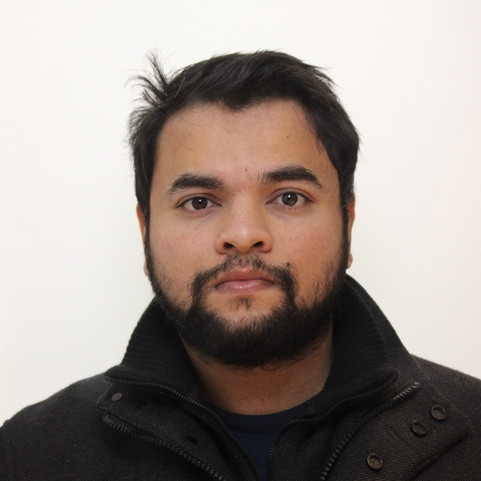

About me

Expert Software Developer with 7+ years of experience in
contributing in design and creation of scalable software to write
clean and functional code on front-end and back-end. Minimize
system downtime and quickly respond to changing needs of the
business. Seasoned full stack developer with experience in
training front-end and back-end developers and providing active
feedback and hiring.
Work Experience
FULL STACK ENGINEER CREDIT SUISSE, PUNE Oct 2019 – Present
- Promoted to assistant vice president(AVP) from ENO 3.
- Successful contribution in migrating 5 applications from JAP to Angular and Spring boot using Agile Methodology. Performing as IT Owner for Asset Servicing Portal and Seclib applications. Guided, coached the new joiners from Pune and Zurich on various technologies related to Asset Servicing applications. Successfully implemented CI/CD for Asset Servicing Portal.
- Proposed micro frontend architecture and implementation is in progress. Built reusable libraries (SECLIB) which are published to InnerSource for wider groups within Credit Suisse India.
- Delivered high quality software for the SRD II program to support our business to meet the key regulatory requirements.
- Provided swift resolutions to business towards production stability.
- Major contributions towards hiring for Operations Technology India: Conducted interviews, hiring.
LEAD PROJECT ENGINEER PERSISTENT SYSTEM LIMITED, GOA July 2017 - Oct 2019
- Promoted to Lead Project Engineer from Sr. Front End Developer.
- Responsible for end-to-end project delivery. Worked for AppDynamics in migrating the application from Adobe flash to Angular and Spring Boot technology.
- Handled clients like IBM in Research projects for three different applications including building the application architecture.
JAVASCRIPT DEVELOPER SRIJAN TECHNOLOGIES, GOA Feb 2016 - June 2017
- Worked with International clients to understand business needs and develop software solutions with necessary validations. Developed software to analyze and process data and statistics which works both online and offline.
- Drive community technology consciousness/awareness by code sprints, sessions, demos, blogs, presentations.
- Took complete ownership for the code quality, including review, guide and support other developers when required.
- Actively participated in tech discussions, estimations, and supported Tech Leads in technical/architectural decisions.
FULLSTACK DEVELOPER GARUD TECHNOLOGIES, GOA July 2015 - Jan 2016
- Created Angular project architecture. Created WebAPI in C# MVC. Deployed Angular application. Worked with Ionic framework (hybrid Application)